In the mid-2010s, microservices took the software engineering industry by storm. The intent was to address modern systems’ need to change quickly, scale, and fit the distributed nature of cloud computing naturally. Many companies made the strategic decision to decompose their monolithic codebases in favor of the flexibility provided by the microservices-based architecture. Unfortunately, many such endeavors didn’t end well. Instead of flexible architectures, these companies ended up with distributed big balls of mud—designs that are much more fragile, clumpy, and expensive than the monoliths the companies wanted to break apart.
Historically, microservices are often associated with DDD, especially with the bounded context pattern. Many people even use the terms bounded context and microservices interchangeably. But are they really the same thing? This chapter explores the relationship between domain-driven design methodology and the microservices architectural pattern. You will learn the interplay between the patterns, and more importantly, how you can leverage DDD to design effective microservices-based systems.
Let’s start with the basics and define what exactly are services and microservices.
According to OASIS, a service is a mechanism that enables access to one or more capabilities, where the access is provided using a prescribed interface.1 The prescribed interface is any mechanism for getting data in or out of a service. It can be synchronous, such as a request/response model, or asynchronous, such as a model that is producing and consuming events. This is the service public interface, as shown in Figure 14-1, which provides a means for communicating and integrating with other system components.
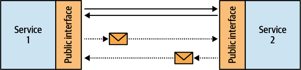
Randy Shoup likens a service’s interface to a front door. All data going into or out of the service has to pass through the front door. Furthermore, a service’s public interface defines the service itself: the functionality exposed by the service. A well-expressed interface is enough to describe the functionality implemented by a service. For example, the public interface illustrated in Figure 14-2 explicitly describes the functionality of the service.
This takes us to the definition of microservice.
The definition of a microservice is surprisingly simple. Since a service is defined by its public interface, a microservice is a service with a micro-public interface: a micro-front door.
Having a micro-public interface makes it easier to understand both the function of a single service and its integration with other system components. Reducing a service’s functionality also limits its reasons for change and makes the service more autonomous for development, management, and scale.
In addition, it explains the practice of microservices not exposing their databases. Exposing a database, making it a part of the service’s front door, would make its public interface huge. For example, how many different SQL queries can you execute on a relational database? Since SQL is quite a flexible language, the likely estimate would be infinity. Hence, microservices encapsulate their databases. The data can only be accessed through a much more compact, integration-oriented public interface.
Saying that a microservice is a micro-public interface is deceptively simple. It may sound as though limiting service interfaces to a single method would result in perfect microservices. Let’s see what will happen if we apply this naïve decomposition in practice.
Consider the backlog management service in Figure 14-3. Its public interface consists of eight public methods, and we want to apply the “one method per service” rule.
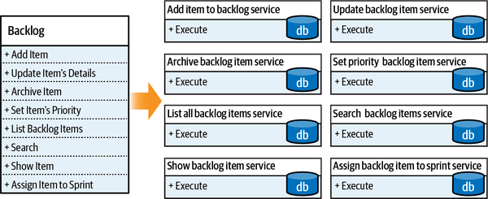
Since these are well-behaved microservices, each encapsulates its database. No one service is allowed to access another service’s database directly; only through its public interface. But currently, there is no public interface for that. The services have to work together and synchronize the changes each service is applying. As a result, we need to expand the services’ interfaces to account for these integration-related concerns. Furthermore, when visualized, the integrations and data flow between the resultant services resemble a typical distributed big ball of mud, as shown in Figure 14-4.
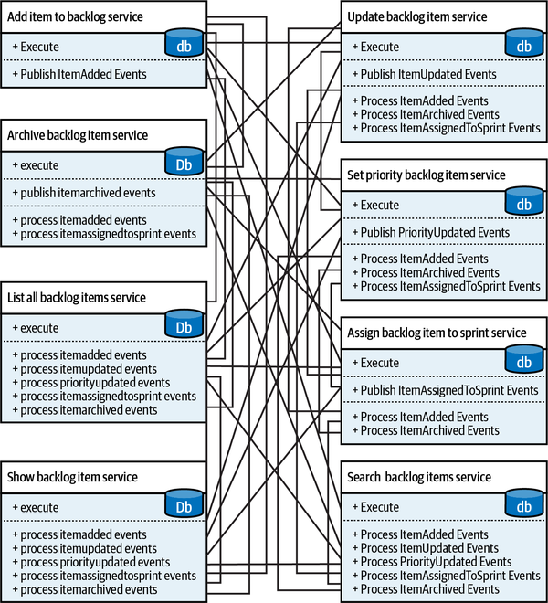
Paraphrasing Randy Shoup’s metaphor, by decomposing the system to such fine-grained services, we definitely minimized the services’ front doors. However, to implement the overarching system’s functionality, we had to add enormous “staff only” entrances to each service. Let’s see what we can learn from this example.
Following the simplistic decomposition heuristic of having each service expose only a single method proved to be suboptimal for many reasons. First, it’s simply not possible. Since the services have to work together, we were forced to expand their public interfaces with integration-related public methods. Second, we won the battle but lost the war. Each service ended up being much simpler than the original design, however the resultant system became orders of magnitude more complex.
The goal of the microservices architecture is to produce a flexible system. Concentrating the design efforts on a single component, but ignoring its interactions with the rest of the system, goes against the very definition of a system:
A set of connected things or devices that operate together
A set of computer equipment and programs used together for a particular purpose
Hence, a system cannot be built out of independent components. In a proper microservices-based system, however decoupled, the services still have to be integrated and communicate with each other. Let’s take a look at the interplay between the complexity of individual microservices and the complexity of the overarching system.
Forty years ago, there was no cloud computing, there were no global-scale requirements, and there was no need to deploy a system every 11.7 seconds. But engineers still had to tame systems’ complexity. Even though the tools in those days were different, the challenges—and more importantly, the solution—are relevant nowadays and can be applied to the design of microservices-based systems.
In his book, Composite/Structured Design, Glenford J. Myers discusses how to structure procedural code to reduce its complexity. On the first page of the book, he writes:
There is much more to the subject of complexity than simply attempting to minimize the local complexity of each part of a program. A much more important type of complexity is global complexity: the complexity of the overall structure of a program or system (i.e., the degree of association or interdependence among the major pieces of a program).
In our context, local complexity is the complexity of each individual microservice, whereas global complexity is the complexity of the whole system. Local complexity depends on the implementation of a service; global complexity is defined by the interactions and dependencies between the services. Which of the complexities is more important to optimize when designing a microservices-based system? Let’s analyze both extremes.
It’s surprisingly easy to reduce global complexity to a minimum. All we have to do is eliminate any interactions between the system’s components—that is, implement all functionality in one monolithic service. As we’ve seen earlier, this strategy may work in certain scenarios. In others, it may lead to the dreaded big ball of mud: probably the highest possible level of local complexity.
On the other hand, we know what happens when we optimize only the local complexity but neglect the system’s global complexity—the even more dreaded distributed big ball of mud. This relationship is shown in Figure 14-5.
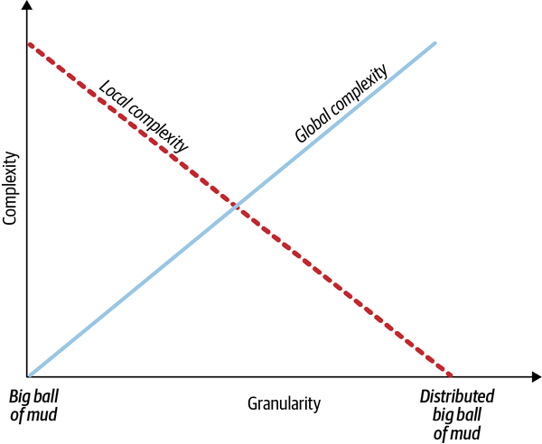
To design a proper microservices-based system, we have to optimize both global and local complexities. Setting the design goal of optimizing either one individually is a local optima. The global optima balances both complexities. Let’s see how the notion of micro-public interfaces lends itself to balancing global and local complexities.
A module in a software system, or any system, for that matter, is defined by its function and logic. A function is what the module is supposed to do—its business functionality. The logic is the module’s business logic—how the module implements its business functionality.
In his book, The Philosophy of Software Design, John Ousterhout discusses the notion of modularity and proposes a simple yet powerful visual heuristic for evaluating a module’s design: depth.
Ousterhout proposes to visualize a module as a rectangle, as shown in Figure 14-6. The rectangle’s top edge represents the module’s function, or the complexity of its public interface. A wider rectangle represents broader functionality, while a narrower one has a more restricted function and thus a simpler public interface. The area of the rectangle represents the module’s logic, or the implementation of its functionality.
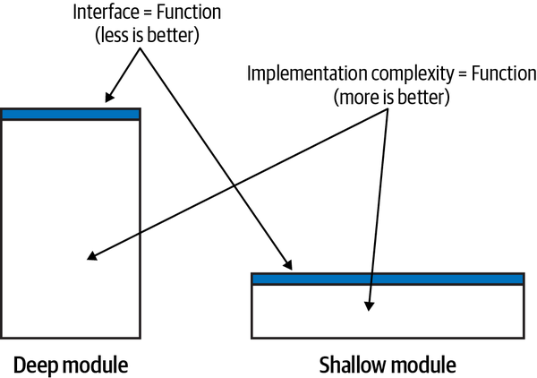
According to this model, effective modules are deep: a simple public interface encapsulates complex logic. Ineffective modules are shallow: a shallow module’s public interface encapsulates much less complexity than a deep module. Consider the method in the following listing:
intAddTwoNumbers(inta,intb){returna+b;}
This is the extreme case of a shallow module: the public interface (the method’s signature) and its logic (the methods) are exactly the same. Having such a module introduces extraneous “moving parts,” and thus, instead of encapsulating complexity, it adds accidental complexity to the overarching system.
Apart from different terminology, the notion of deep modules differs from the microservices pattern in that the modules can denote both logical and physical boundaries, while microservices are strictly physical. Otherwise, both concepts and their underlying design principles are the same.
The services implementing a single business method, shown in Figure 14-3, are shallow modules. Because we had to introduce integration-related public methods, the resultant interfaces are “wider” than they should have been.
From a system complexity standpoint, a deep module reduces the system’s global complexity, while a shallow module increases it by introducing a component that doesn’t encapsulate its local complexity.
Shallow services are also the reason why so many microservices-oriented projects fail. The mistaken definitions of a microservice as a service having no more than X lines of code, or as a service that should be easier to rewrite than to modify, concentrate on the individual service while missing the most important aspect of the architecture: the system.
The threshold upon which a system can be decomposed into microservices is defined by the use cases of the system that the microservices are a part of. If we decompose a monolith into services, the cost of introducing a change goes down. It is minimized when the system is decomposed into microservices. However, if you keep decomposing past the microservices threshold, the deep services will become more and more shallow. Their interfaces will grow back up. This time, due to integration needs, the cost of introducing a change will go up as well, and the overall system’s architecture will turn into the dreaded distributed big ball of mud. This is depicted in Figure 14-7.
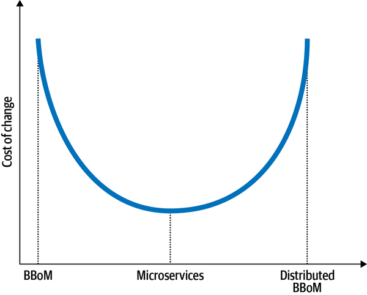
Now that we’ve learned what microservices are, let’s take a look at how domain-driven design can help us find the boundaries of deep services.
As microservices, many of the domain-driven design patterns discussed in the previous chapters are about boundaries: the bounded context is the boundary of a model, a subdomain bounds a business capability, while aggregate and value objects are transactional boundaries. Let’s see which of these boundaries lends itself to the notion of microservices.
The microservices and bounded context patterns have a lot in common, so much so that the patterns are often used interchangeably. Let’s see whether that’s really the case: do bounded contexts’ boundaries correlate with the boundaries of effective microservices?
Both microservices and bounded contexts are physical boundaries. Microservices, as bounded contexts, are owned by a single team. As in bounded contexts, conflicting models cannot be implemented in a microservice, resulting in complex interfaces. Microservices are indeed bounded contexts. But does this relationship work the other way around? Can we say that bounded contexts are microservices?
As you learned in Chapter 3, bounded contexts protect the consistency of ubiquitous languages and models. No conflicting models can be implemented in the same bounded context. Say you are working on an advertising management system. In the system’s business domain, the business entity Lead is represented by different models in the Promotions and Sales contexts. Hence, Promotions and Sales are bounded contexts, each defining one and only one model of the Lead entity, which is valid in its boundary, as shown in Figure 14-8.
For simplicity’s sake, let’s assume there are no other conflicting models in the system besides Lead. This makes the resultant bounded contexts naturally wide—each bounded context can contain multiple subdomains. The subdomains can be moved from one bounded context to another one. As long as the subdomains do not imply conflicting models, all the alternative decompositions in Figure 14-9 are perfectly valid bounded contexts.
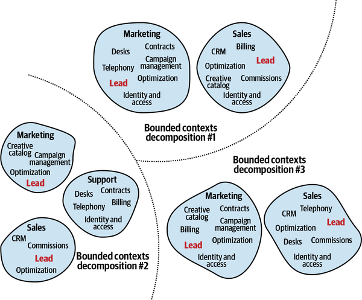
The different decompositions to bounded contexts attribute different requirements, such as different teams’ sizes and structures, lifecycle dependencies, and so on. But can we say that all the valid bounded contexts in this example are necessarily microservices? No. Especially considering the relatively wide functionalities of the two bounded contexts in decomposition 1.
Therefore, the relationship between microservices and bounded contexts is not symmetric. Although microservices are bounded contexts, not every bounded context is a microservice. Bounded contexts, on the other hand, denote the boundaries of the largest valid monolith. Such a monolith should not be confused with a big ball of mud; it’s a viable design option that protects the consistency of its ubiquitous language, or its model of the business domain. As we will discuss in Chapter 15, such broad boundaries are more effective than microservices in certain cases.
Figure 14-10 visually demonstrates the relationship between bounded contexts and microservices. The area between the bounded contexts and microservices is safe. These are valid design options. However, if the system is not decomposed into proper bounded contexts or is decomposed past the microservices threshold, it will result in a big ball of mud or a distributed big ball of mud, respectively.
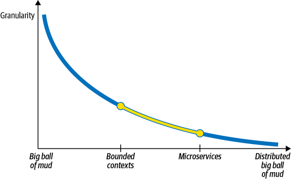
Next, let’s examine the other extreme: whether aggregates can help find the microservices’ boundaries.
While bounded contexts impose limits on the widest valid boundaries, the aggregate pattern does the opposite. The aggregate’s boundary is the narrowest boundary possible. Decomposing an aggregate into multiple physical services, or bounded contexts, is not only suboptimal but, as you will learn in Appendix A, leads to undesired consequences, to say the least.
As bounded contexts, aggregates’ boundaries are also often considered to drive the boundaries of microservices. An aggregate is an indivisible business functionality unit that encapsulates the complexities of its internal business rules, invariants, and logic. That said, as you learned earlier in this chapter, microservices are not about individual services. An individual service has to be considered in the context of its interactions with other components of the system:
Does the aggregate in question communicate with other aggregates in its subdomain?
Does it share value objects with other aggregates?
How likely will the aggregate’s business logic changes affect other components of the subdomain and vice versa?
The stronger the aggregate’s relationship is with the other business entities of its subdomain, the shallower it will be as an individual service.
There will be cases in which having an aggregate as a service will produce a modular design. However, much more often such fine-grained services will increase the overarching system’s global complexity.
A more balanced heuristic for designing microservices is to align the services with the boundaries of business subdomains. As you learned in Chapter 1, subdomains are correlated with fine-grained business capabilities. These are the business building blocks required for the company to compete in its business domain(s). From a business domain perspective, subdomains describe the capabilities—what the business does—without explaining how the capabilities are implemented. From a technical standpoint, subdomains represent sets of coherent use cases: using the same model of the business domain, working on the same or closely related data, and having a strong functional relationship. A change in the business requirements of one of the use cases is likely to affect the other use cases, as shown in Figure 14-11.
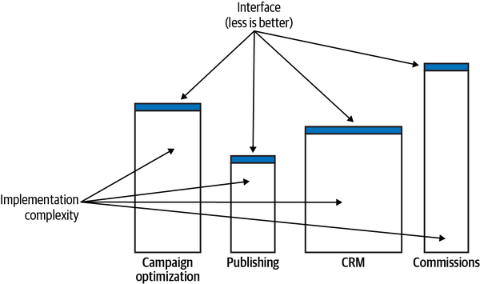
The subdomains’ granularity and the focus on the functionality—the “what” rather than the “how”—makes subdomains naturally deep modules. A subdomain’s description—the function—encapsulates the more complex implementation details—the logic. The coherent nature of the use cases contained in a subdomain also ensures the resultant module’s depth. Splitting them apart in many cases would result in a more complex public interface and thus shallower modules. All of these things make subdomains a safe boundary for designing microservices.
Aligning microservices with subdomains is a safe heuristic that produces optimal solutions for the majority of microservices. That said, there will be cases where other boundaries will be more efficient; for example, staying in the wider, linguistic boundaries of the bounded context or, due to nonfunctional requirements, resorting to an aggregate as a microservice. The solution depends not only on the business domain but also on the organization’s structure, business strategy, and nonfunctional requirements. As we discussed in Chapter 11, it’s crucial to continuously adapt the software architecture and design to changes in the environment.
In addition to finding service boundaries, domain-driven design can help make services deeper. This section demonstrates how the open-host service and anticorruption layer patterns can simplify the microservices’ public interfaces.
The open-host service decouples the bounded context’s model of the business domain from the model used for integration with other components of the system, as shown in Figure 14-12.
Introducing the integration-oriented model, the published language, reduces the system’s global complexity. First, it allows us to evolve the service’s implementation without impacting its consumers: the new implementation model can be translated to the existing published language. Second, the published language exposes a more restrained model. It is designed around integration needs. It encapsulates the complexity of the implementation that is not relevant to the service’s consumers. For example, it can expose less data and in a more convenient model for consumers.
Having a simpler public interface (function) over the same implementation (logic) makes the service “deeper” and contributes to a more effective microservice design.
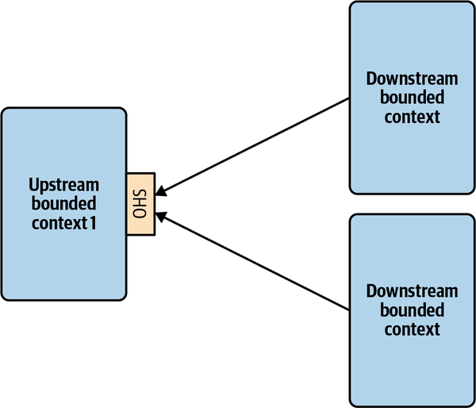
The anticorruption layer (ACL) pattern works the other way around. It reduces the complexity of integrating the service with other bounded contexts. Traditionally, the anticorruption layer belongs to the bounded context it protects. However, as we discussed in Chapter 9, this notion can be taken a step further and implemented as a standalone service.
The ACL service in Figure 14-13 reduces both the local complexity of the consuming bounded context and the system’s global complexity. The consuming bounded context’s business complexity is separated from the integration complexity. The latter is offloaded to the ACL service. Because the consuming bounded context is working with a more convenient, integration-oriented model, its public interface is compressed—it doesn’t reflect the integration complexity exposed by the producing service.
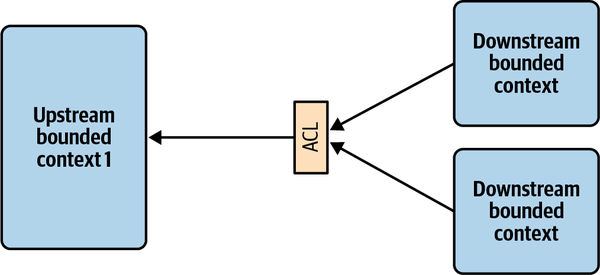
Historically, the microservice-based architectural style is deeply interconnected with domain-driven design, so much so that the terms microservice and bounded context are often used interchangeably. In this chapter, we analyzed the connection between the two and saw that they are not the same thing.
All microservices are bounded contexts, but not all bounded contexts are necessarily microservices. In its essence, a microservice defines the smallest valid boundary of a service, while a bounded context protects the consistency of the encompassed model and represents the widest valid boundaries. Defining boundaries to be wider than their bounded contexts will result in a big ball of mud, while boundaries that are smaller than microservices will lead to a distributed big ball of mud.
Nevertheless, the connection between microservices and domain-driven design is tight. We saw how domain-driven design tools can be used to design effective microservice boundaries.
In Chapter 15, we will continue discussing high-level system architecture but from a different perspective: asynchronous integration through event-driven architecture. You will learn how to leverage the different kinds of event messages to further optimize microservices’ boundaries.
What is the relationship between bounded contexts and microservices?
All microservices are bounded contexts.
All bounded contexts are microservices.
Microservices and bounded contexts are different terms for the same concept.
Microservices and bounded contexts are completely different concepts and cannot be compared.
What part of a microservice should be “micro”?
The number of pizzas required to feed the team implementing the microservices; i.e., using “two pizza“ principle to design service boundaries.
The number of lines of code it takes to implement the service’s functionality. Since the metric is agnostic of the lines’ widths, it’s preferable to implement microservices on ultrawide monitors.
The most important aspect of designing microservices-based systems is to get microservices-friendly middleware and other infrastructural components, preferably from microservices-certified vendors.
The knowledge of the business domain and its intricacies exposed across the service’s boundary and reflected by its public interface.
What are the safe component boundaries?
Boundaries wider than bounded contexts.
Boundaries narrower than microservices.
Boundaries between bounded contexts (widest) and microservices (narrowest).
Is it a good design decision to align microservices with the boundaries of aggregates?
Yes, aggregates always make for proper microservices.
No, aggregates should never be exposed as individual microservices.
It’s impossible to make a microservice out of a single aggregate.
The decision depends on the business domain.